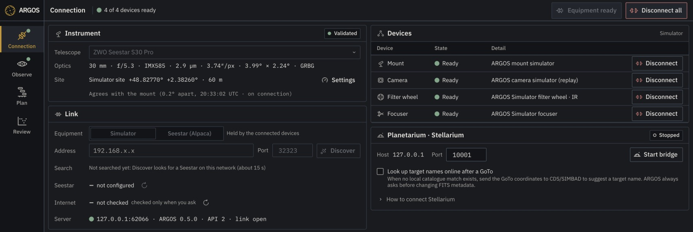

Version 0.5.0 · first beta
Install.
The new ARGOS: its interface in a desktop window, with the ARGOS server running beside it on the same computer. Built by the release workflow on the v0.5.0 tag, after the test suites and a smoke test of the bundled server. Free software under the GNU GPL v3.
01 · Installers
Get ARGOS 0.5.0.
Apple silicon · signed ad hoc, not notarised · READ ME FIRST.txt inside
x86_64 · Ubuntu 22.04 or Debian 12 and later · WebKitGTK 4.1 · technical preview
Download .deb ↓Python 3.11 and Node.js · uv sync --extra dev --extra qt --extra server · (cd web && npm install) · uv run python run_web.py --sim
File sizes are listed with the assets on the v0.5.0 release page.
The app declares macOS 11.0 as its minimum. Its interface needs the WebKit of Safari 16.2 or later (container queries, color-mix()): on macOS 11 and 12, keep Safari updated. Tested on macOS 26 only.
Built on Ubuntu 22.04 against WebKitGTK 4.1, so it needs glibc 2.35 or later (the highest version the 0.5.0 package's binaries ask for). Its server is smoke-tested in CI; the window has not yet been tested on a Linux desktop.
0.5.0 was tested with its built-in simulator and with replays of real nights. Live use on a Seestar is still to come: watch the first nights closely.
02 · Setup
Four steps, once.
-
01
Install ASTAP
ARGOS does not bundle it. Install the ASTAP executable and one of its star databases: they are separate downloads, and plate solving needs both.
-
02
Install ARGOS
macOS: open the
.dmg, drag ARGOS to Applications, then open it once as in the box above. Debian or Ubuntu:sudo apt install ./ARGOS_0.5.0_amd64.deb. -
03
Point ARGOS at ASTAP
In Settings › Plate solving, set ASTAP executable, and Star database folder if ARGOS does not find the database. It cannot solve from the executable alone.
-
04
Start the telescope in the Seestar app
Every night begins in the official app: power and initialise the Seestar, complete its GoTo calibration and the first focus there. Then, on the Connection screen, choose Seestar (Alpaca):
10.0.0.1, port32323, in access-point mode, then Connect all. Wait for mount, camera, filter wheel and focuser to read Ready.

03 · Instruments
Telescope profiles.
30 mm, f/5.3, IMX585, 3.74″/px, 4.0° × 2.2°. The reference profile, its gain measured by photon transfer on one unit over three nights: 0.228 e−/ADU and 2.6 e− read noise at gain 80.
30 mm, f/5.0, IMX662, 3.99″/px. Selectable, but GRBG is assumed and the gain curve is inherited.
50 mm, f/5.0, IMX462, 2.39″/px. Selectable, but GRBG is assumed and the gain curve is inherited.
04 · Release notes
What changed in 0.5.0.
- A new interface, in a desktop app. Connection, Observe (Framing, Focus, Field, Run), Plan, Review and Settings in one window, in three dark themes, Night Red among them for dark-adapted eyes. The PyQt6 app is retired.
- Error bars from the camera's measured noise. The noise model is the green plane's, with the camera's measured e−/ADU (0.4.x used one that put the stars' photon noise 1.9 to 2.7 times off), scintillation and the sky estimate's own error; the sky is the annulus' 3σ-clipped mean; the comparisons are weighted by their errors. The noise model and the e−/ADU are locked while a run lasts. The error bars are about right for faint stars and on the safe side for bright ones (1.3 to 1.6 times their scatter) until 0.5.x.
- Times, site and airmass. Frames are timed by their exposure, not their download; BJD_TDB is computed offline; the Settings site is checked against the mount, and Review and the re-run take the airmass from the frames' headers.
- Apertures that follow the field. They are placed from the plate solution and anchor stars, with proper motion and each star's own airmass; a frame where they do not line up gets no point, and a crowded comparison is named.
- Review and the AAVSO export. Old sessions reopen with a batch re-run on today's code; a report holds one filter, leaves out saturated, suspect and no-detection points, names the VSP chart and the ARGOS version.
- Files you already hold. Several 0.4.x defects wrote wrong values into frames, curves and AAVSO reports. Check your old files before you reuse them.
Before you observe The live curve and the re-run measure raw frames: no dark, flat or bias. Keep the raw FITS; the calibrated measurement comes from Siril. Attended use only: there is no weather safety. And 0.5.0 has not yet been used live on a telescope.